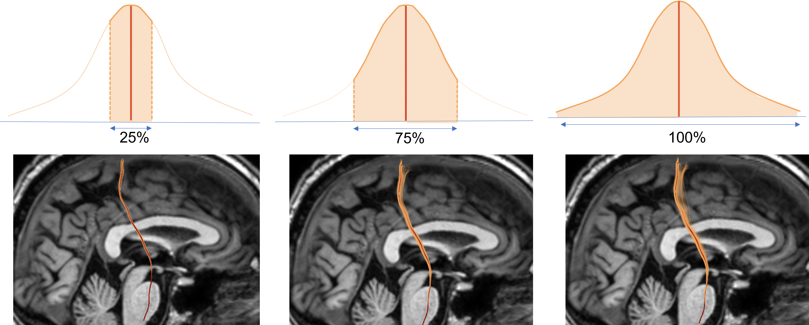

Our simulation generates many possible variations of the same fiber tract (i.e.,
originated from the same ROI). The variations in the fiber tracts arises due to
the underlying uncertainty sources present in the pipeline.
These variations in
the fiber tracts are represented in Figure (B).
We computed the most central fiber and the fiber distribution from all the possible variations of the fibers and termed it the representative fiber.
For example, in the clinical laboratory, a specific test is performed multiple times, and the result is determined based on a statistical mean or median.
Similarly, we computed the most central fiber (considered as a median fiber) from all the possible variations of the fibers and termed it as the
representative fiber. The 100 % fiber variance and the representative fiber is shown in Figure (C)

A user can also select the range
of the variance to be visualized. e.g, 25% will only show the first quarter of the
fiber samples closer to the representative fiber. Similarly, 100% will show all the
fiber samples, as shown in the figure. The red line represents the median line while the colored region represents the
visualized range.
